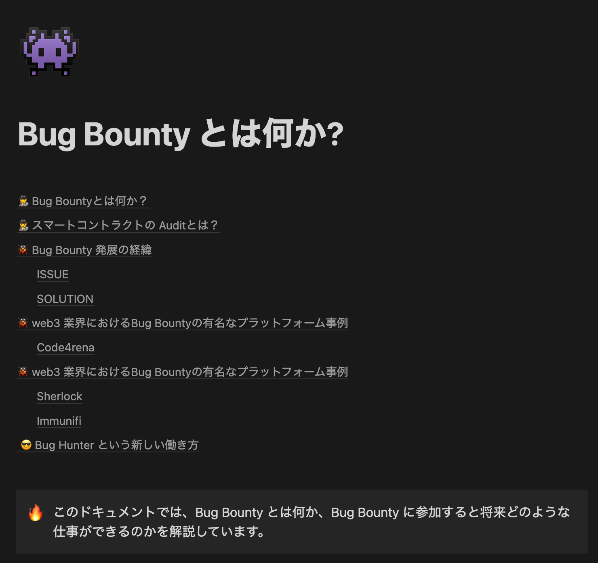
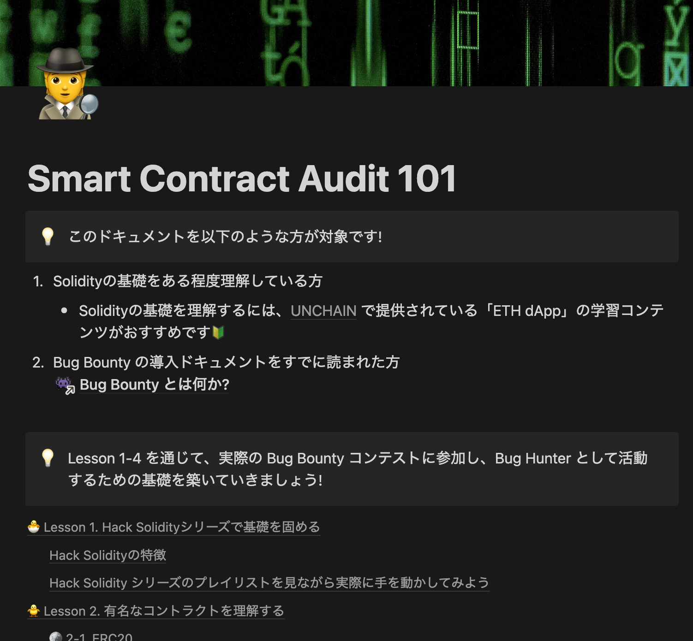
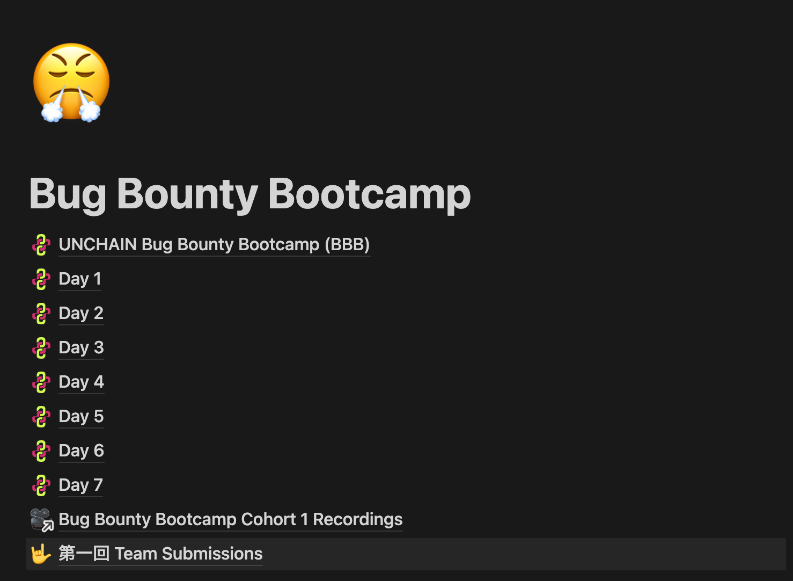
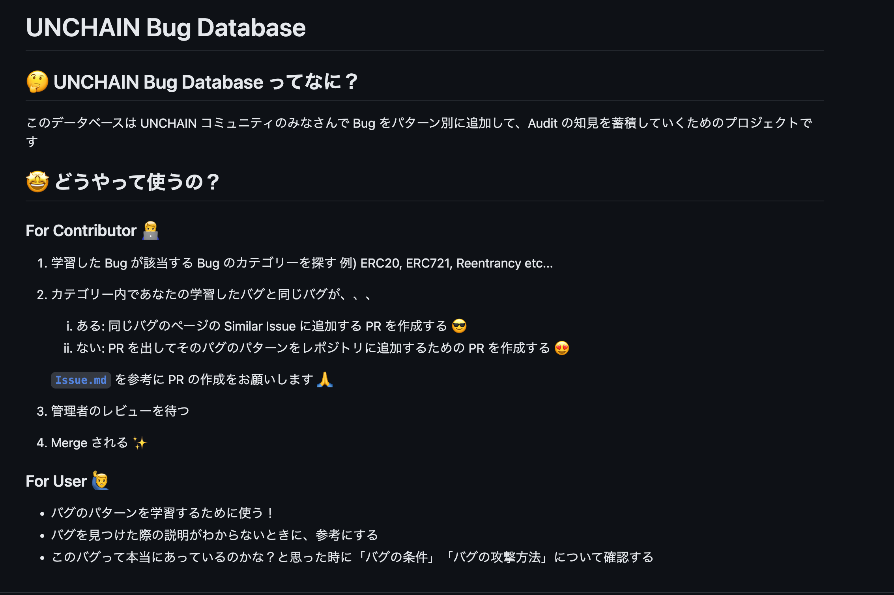
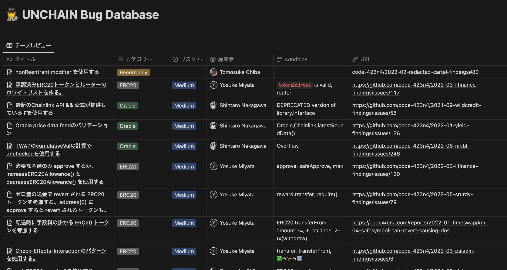
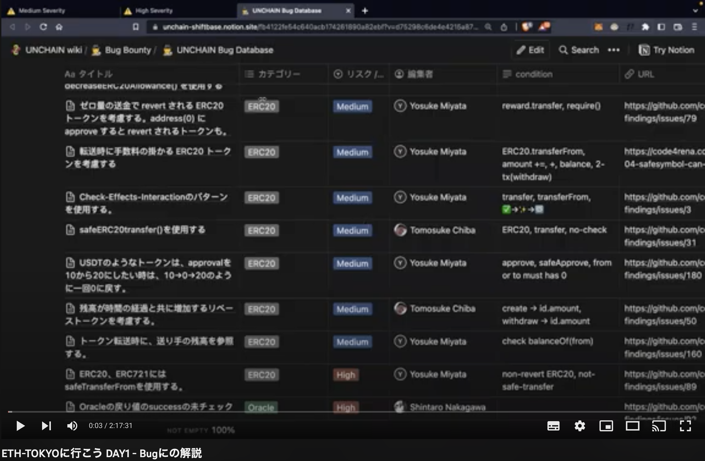
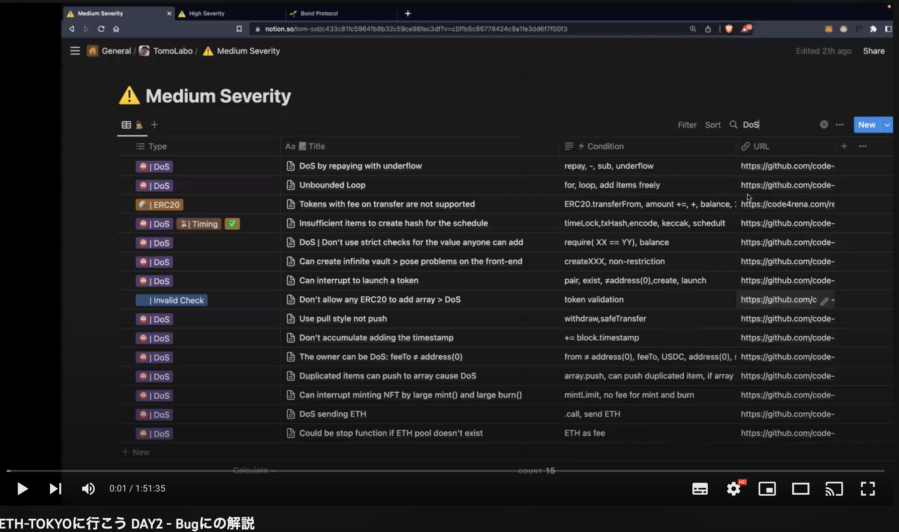

UNCHAIN コンテンツ
STEP① | そもそも…
Bug Bounty とは何か?

https://unchain-shiftbase.notion.site/Bug-Bounty-42ec4d16f0c143debd13d70cb2ee95ac
STEP② | Auditorになるためのロードマップ
Smart Contract Audit 101 【初心者向け】

https://unchain-shiftbase.notion.site/Smart-Contract-Audit-101-cfd8da4758044d93b6e361d79872f4d4
STEP③ | ブートキャンプ
Bug Bounty Bootcamp【中級者向け】

https://unchain-shiftbase.notion.site/Bug-Bounty-Bootcamp-c8ecad89550146468f9b17862e254a54
STEP④ | バグ Example
各カテゴリーの有名なバグの例がこちら

https://github.com/unchain-tech/openzeppelin-deepdive/tree/main/bugs
STEP⑤ | バグDB
UNCHAIN Bug Database

STEP⑥ | バグDB解説
解説❶

解説❷
